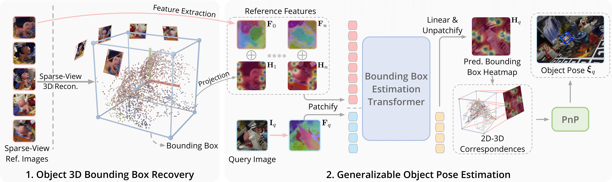

Abstract
TL;DR: We propose a novel generalizable object pose estimation method that leverages object bouding box corners as intermediate representation.

BoxDreamer is a generalizable RGB-based approach for object pose estimation, specifically designed to address challenges in sparse-view settings.
While existing methods can estimate the poses of unseen objects, their generalization ability remains limited in scenarios involving occlusions and sparse reference views, restricting their real-world applicability.
To overcome these limitations, we introduce corner points of the object bounding box as an intermediate representation of the object pose.
The 3D object corners can be reliably recovered from sparse input views, while the 2D corner points in the target view are estimated through a novel reference-based point synthesizer, which works well even in scenarios involving occlusions.
As object semantic points, object corners naturally establish 2D-3D correspondences for object pose estimation with a PnP algorithm.
Extensive experiments on the YCB-Video and Occluded-LINEMOD datasets show that our approach outperforms state-of-the-art methods, highlighting the effectiveness of the proposed representation and significantly enhancing the generalization capabilities of object pose estimation, which is crucial for real-world applications.
The code will be released for the reproducibility.